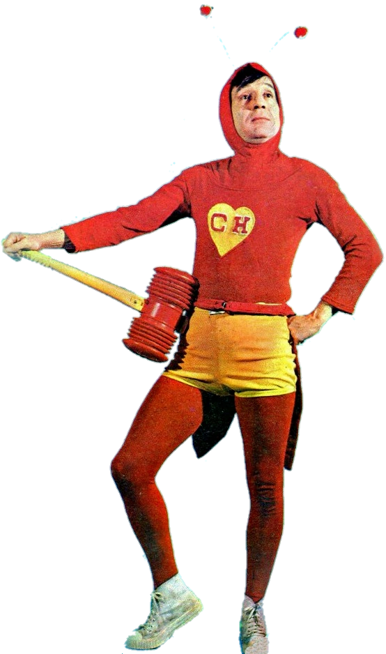

Chapolin Colorado

Sinopse
El Chapulín Colorado (no Brasil, Chapolin) é um seriado de televisão de comédia mexicano criado, escrito, dirigido e protagonizado por Roberto Gómez Bolaños. Produzido pela Televisa e exibido por suas emissoras de 28 de fevereiro de 1973 a 26 de setembro de 1979, com sete temporadas e 291 episódios, o seriado apresenta Chapulín Colorado, uma sátira de super-herói que aparece quando é chamado por quem precisa de ajuda mas que, por ser atrapalhado, acaba provocando confusões.
Bolaños interpretou Chapulín pela primeira vez em 1970 no programa de esquetes Chespirito, seu nome artístico, que ele escrevia para a Televisión Independiente de México (TIM). Gradualmente, com o sucesso, o personagem obteve mais espaço na atração, até que, em 1973, após a fusão da TIM com o Telesistema Mexicano, criando a Televisa, ganhou um seriado próprio com 20 minutos de duração, assim como El Chavo del Ocho (no Brasil, Chaves), outro personagem de Chespirito oriundo do antigo programa. O elenco principal contava com Ramón Valdés, María Antonieta de las Nieves (que já atuavam desde o começo do programa Chespirito), Carlos Villagrán, Florinda Meza, Rubén Aguirre, Edgar Vivar, Horacio Gómez Bolaños, Angelines Fernández e Raúl "Chato" Padilla. Os atores interpretavam diferentes personagens a cada episódio, sendo que alguns antagonistas de Chapolin também apareciam recorrentemente.
El Chapulín Colorado é um dos maiores êxitos da Televisa ao lado de El Chavo, exibido em praticamente todo o mesmo período, continuando a ter esquetes produzidos em uma nova versão do programa Chespirito nas décadas de 1980 e 1990. O sucesso tornou o seriado o primeiro exportado pela televisão mexicana, principalmente para quase todos os países da América Latina, impactando a cultura popular do continente por seu humor pastelão e pela figura de um super-herói local, ainda que sem grandes poderes, em contraponto aos dos Estados Unidos. Comercialmente, o personagem também foi representado em histórias em quadrinhos, turnês e jogos eletrônicos, além de ter ganho uma série animada em 2015.
Produção
Em 26 de novembro de 1970, foi ao ar o primeiro episódio de Chapolin, ainda como uma esquete, dentro do programa Chespirito. O primeiro episódio foi "O Casamento Forçado".[2] [3] O herói foi bem aceito e ofuscou o maior sucesso de Bolaños até então, Los Supergenios de la Mesa Cuadrada, e ganhou espaço próprio em 1973. Os estilos de humor dos dois programas eram bem diferentes: "Los supergenios" fazia piada em cima de notícias do dia-a-dia, lidando com o factual e muitas vezes se referindo a questões políticas; tinha, portanto, um humor datado, além de ser um programa eminentemente adulto. Chapolin, ao contrário, não tinha piadas datadas, o que permitiu que o programa durasse muito tempo; mostrava um herói atrapalhado tentando ajudar quem o chamasse. Possuía um humor abrangente e, assim, mais comercial.[1] Pela sua fama, o herói acabaria sendo vendido a uma empresa de hipermídia (a DC Comics do México) em 1975, e foi ficando cada vez mais famoso no tanto na América do Norte quanto em toda a América Latina.
Na ocasião da primeira confecção do uniforme, só havia quatro cores de tecido na emissora: azul, preto, branco e vermelho. Preto não era interessante porque, para Chespirito, dava a impressão de luto. Branco também era ruim para a televisão, por ser uma cor muito clara, que refletia no vídeo analógico da época. Azul inviabilizava o uso do chroma key, recurso que Chespirito planejava usar. Optou-se, então, pelo vermelho, não porque contivesse algum significado especial, mas por simples eliminação. E assim surgiu o "colorado" ("avermelhado") do nome do personagem. Bolaños até chegou a cogitar o nome "El Chapulín Justiciero", mas logo percebeu a carga moral que esse nome trazia. Como a intenção não era política e sim cômica, "Colorado" foi o escolhido.
Chespirito tinha feito o personagem para que outros atores o interpretassem como um filme, e que rapidamente foi rejeitado devido as características do personagem. O próprio Chespirito abandonou esta ideia e o fez como um quadro em seu programa, dando vida ao personagem.[6] O seriado tinha apenas o protagonista como personagem fixo, mas possuía alguns personagens que frequentemente apareciam em episódios, como os vilões Quase Nada, Tripa Seca, Nenê, entre outros. Em alguns episódios, a crítica aos heróis norte-americanos se torna ainda mais visível, com as aparições de Super Sam, interpretado por Ramón Valdés, um super-herói tipicamente norte-americano. O personagem tem em seu uniforme as cores da bandeira dos Estados Unidos, utiliza expressões em inglês, e carrega um saquinho de dinheiro, numa crítica direta ao capitalismo selvagem dos Estados Unidos.[7] Chapolin é um personagem atemporal. Aparece nos lugares mais exóticos das mais variadas épocas: no Velho Oeste, na Idade Média, no Renascimento ou até no espaço sideral. Para que Chapolin apareça de qualquer lugar, sem o menor aviso, basta que alguém pronuncie as palavras "Oh! E agora quem poderá me defender?" e ele surge, frequentemente tropeçando em alguma coisa e sempre respondendo ao apelo: "Eu!". A começar pela entrada nada triunfal, o herói não impõe muito respeito e quase sempre é ridicularizado por seus inimigos.
Com exceção de Chespirito, o elenco geralmente interpretava personagens diferentes a cada episódio. Normalmente, os personagens a serem salvos tinham o mesmo nome do ator ou atriz que o interpretava, e muitas vezes os atores faziam papeis similares como Florinda Meza sendo uma donzela e Carlos Villagrán como seu marido.
Ao longo dos anos, o elenco atuante no seriado pouco mudou. Todo elenco fixo de El Chavo del Ocho participou da série, sendo que María Antonieta de Las Nieves era regular até meados de 1973 quando ela saiu do programa para trabalhar em outra emissora. Maria retornou em 1975 e a partir daí passou a ser recorrente, como Angelines Fernández, Horácio Gomez Bolaños e Raul Padilla (que entrou no elenco a partir de 1979) foram recorrentes durante toda série, participando geralmente de episódios que exigiam um elenco superior a cinco ou seis atores.
Final da série
Quando Chespirito resolveu desistir de continuar fazendo seus programas, depois de mais de nove anos ininterruptos, produziu o antológico capítulo final do Chapolin, em 1979. O episódio recorda os melhores momentos da série e os atores Rubén Aguirre, Edgar Vivar e Florinda Meza conversam sobre o personagem criado por Chespirito. Eles dizem que o Chapolin é um herói humano, numeram suas virtudes e também relembram momentos da série. No final, Chespirito agradece ao público por tê-lo prestigiado durante mais de uma década, parabeniza seus amigos atores e também a equipe técnica, dando mais destaque ao diretor do programa, Enrique Segoviano. As últimas palavras do Chapolin Colorado em seu capítulo final foram, "Não contavam com minha astúcia!". Depois disso, mostra-se a equipe desmontando e esvaziando o cenário, como um adeus definitivo.[11][12] A série foi cancelada porque Chespirito sofreu um acidente durante as gravações, em que uma parte do cenário atingiu seu olho. Ele se recuperou, mas depois disso concluiu que estava perdendo a agilidade para fazer cenas de ação e por isso decidiu encerrar o programa solo do Chapolin. Nos anos 80 o personagem voltaria às telas, porém do mesmo jeito que começou, como um quadro do programa Chespirito, conhecido no Brasil como Clube do Chaves. No programa, o quadro passou a focar mais na comédia e a ter menos cenas de ação. A série só foi acabar definitivamente em 1992, quando o quadro parou de ser gravado. O motivo foi porque Chespirito achou que já estava velho demais para fazer o Chapolin, mesmo sem haverem tantas cenas de ação.